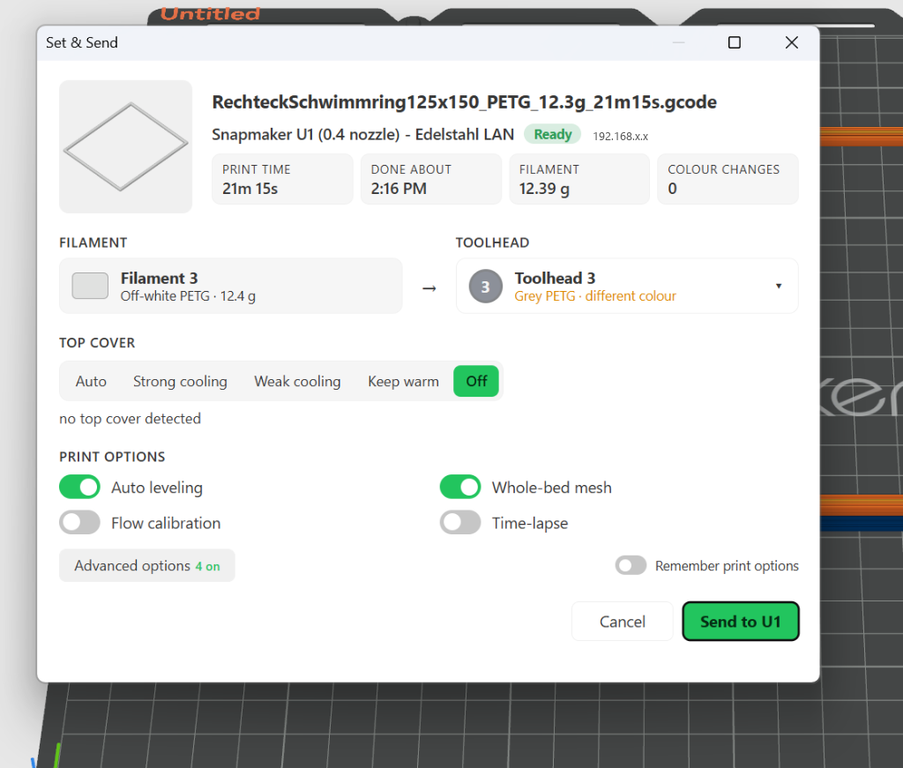

Feedback & Support
The project is free and open-source. A star on GitHub helps, and if you like, buy me a coffee:
Eigenständig und einfach: Kopiere die Dateien direkt in deinen lokalen OrcaSlicer-Benutzerordner. Kein Home Assistant erforderlich!
%APPDATA%\OrcaSlicer\user\default\
Öffne den Windows-Explorer (Win + R), füge den Pfad ein und drücke Enter. Kopiere dort die Ordner process/, filament/ und machine/ hinein.
~/Library/Application Support/OrcaSlicer/user/default/
Schaltet den nativen Pre-Print Dialog, Spulen-Toolhead-Zuweisung, 11×11 Vollbett-Nivellierung und Bauraum-Abluftsteuerung direkt in OrcaSlicer frei.

Im offiziellen Snapmaker-Orca-Fork ist dieser Dialog fest verdrahtet. Wer aber das offizielle, stets aktuelle Vanilla OrcaSlicer (ab v2.5.0 RC) nutzt, vermisste bisher die Werkzeugkopf-Zuweisung und das gezielte Anstoßen der Kalibrierungen. Das geniale Python-Plugin von LayerLab schließt diese Lücke perfekt!
%APPDATA%\OrcaSlicer\orca_plugins\set_and_send.py\set_and_send.py
Lege die Datei set_and_send.py in deinem lokalen OrcaSlicer-Plugin-Ordner ab und aktiviere Plugins in OrcaSlicer.
Präzise getestet für Maßhaltigkeit, minimale Rüstzeiten und sauberen Werkzeugwechsel.
| Profilname | Düse | Schichthöhe | Besonderheiten & Highlights | Download |
|---|---|---|---|---|
| 0.20 Antigravity Optimized | 0.4 mm | 0.20 mm | Alltags-Referenz. 3 Wände, Gyroid-Infill, Type-2 Prime Tower (12–15 mm³), bedingte Scarf-Naht, 12.000 mm/s² Travel. | JSON |
| 0.28 Antigravity Prototype | 0.4 mm | 0.28 mm | Schnelle Funktionstests. 2 Wände, 10% Support Cubic Infill (-50% Material), direkte Verfahrwege. | JSON |
| 0.30 Antigravity Optimized | 0.6 mm | 0.30 mm | Hohe Stabilität & Durchsatz. Arachne-Wandgenerator, 1,2 mm Volldecke, 20 mm³ Turmvolumen. | JSON |
| 0.24 Antigravity Optimized | 0.6 mm | 0.24 mm | Qualitätsprofil für 0.6 mm Düsen. Saubere Überhänge und glatte Konturen bei verkürzter Druckzeit. | JSON |
| 0.40 Antigravity Prototype | 0.6 mm | 0.40 mm | Maximaler Volumendurchsatz für riesige Prototypen in Rekordzeit. | JSON |
Exakte Flow-Raten, Drucktemperaturen und Druckbetthaftung für gängige Marken.
The project is free and open-source. A star on GitHub helps, and if you like, buy me a coffee:
Aufgebaut auf herausragender Vorarbeit der Home Assistant- und 3D-Druck-Community
Das Fundament dieses gesamten Projekts: Ursprüngliche Integrationsbasis, 4-Toolhead-Telemetrie und Kamera-Streaming (MIT-Lizenz).
Open-Source Filament- und Spulen-Inventarverwaltung für Klipper und Home Assistant.
Entwickler des unverzichtbaren "Set & Send" Pre-Print Popups, 11×11 Vollbett-Nivellierung und Bauraum-Filtersteuerung für den U1.
Besonderer Dank an RomRider (button-card), thomasloven (card-mod, slider-entity-row), kalkih (mini-graph-card) und ofekashern.
Für Open-Source-Slicing-Exzellenz und native Toolchanger-Unterstützung.
Eigenständig und einfach: Kopiere die Dateien direkt in deinen lokalen OrcaSlicer-Benutzerordner. Kein Home Assistant erforderlich!
%APPDATA%\OrcaSlicer\user\default\
Öffne den Windows-Explorer (Win + R), füge den Pfad ein und drücke Enter. Kopiere dort die Ordner process/, filament/ und machine/ hinein.
~/Library/Application Support/OrcaSlicer/user/default/